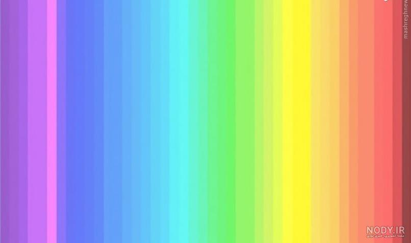
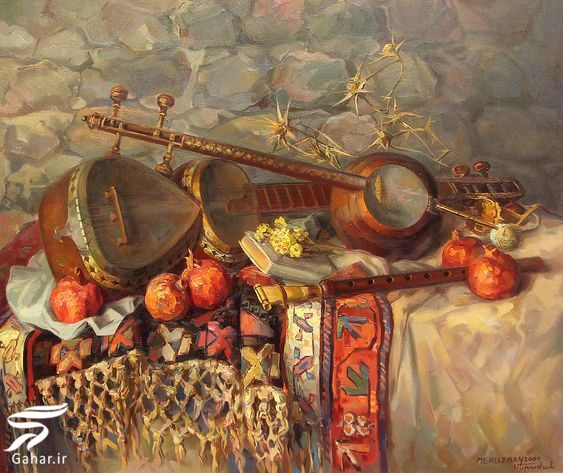
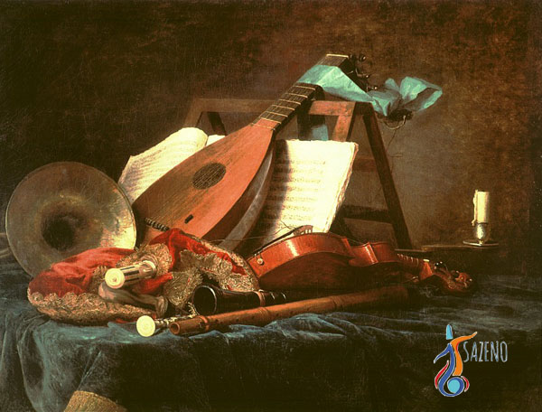
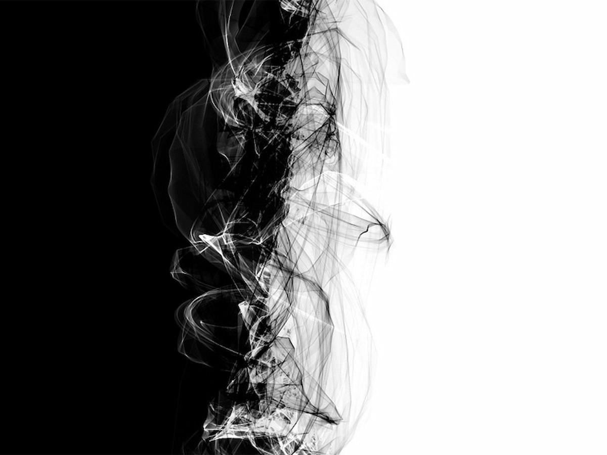
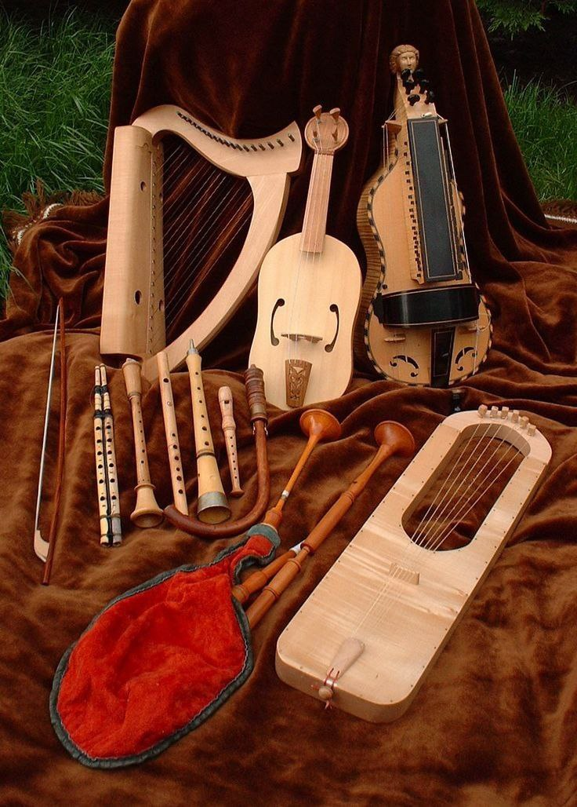
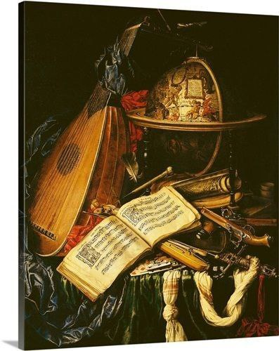

ساز های زهس انواع مختلفی در جهان دارن که هر کشور با توجه به فرهنگ و جغرافیا منحصر به فرد خودش این نوع از ساز هارو شخصی سازی میکند معروف تریت ساز زهی جهان گیتار است و ایران نیز یک ساز به اسم کمانچه و سنتور دارد
مشاهده




